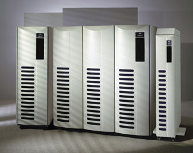
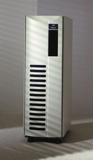
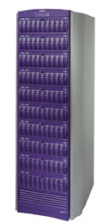

Борис Гермашев,
технический менеджер по работе с заказчиками, корпорация EMC
Germashev_Boris@emc.com
Опубликованное недавно исследование ученых из Университета Калифорнии, посвященное непрерывному росту объемов данных, показывает, что на протяжении 2002 г. человечество накопит около 12 млрд Гбайт новой информации. В 2003 г., как предсказывают исследователи, накопленный объем составит уже 20 млрд Гбайт. Очевидно, что значительная часть этой информации будет использоваться не частными лицами, а компаниями или государственными структурами. Каким же образом эффективно наращивать объемы обрабатываемой информации без лавинообразного усложнения ИТ-инфраструктуры и увеличения затрат?
Насколько важна информация для жизнедеятельности компании? Во многом ответ на этот вопрос зависит от специфики ее работы, от бизнес-модели, от типа хранимой и обрабатываемой информации, но в целом важность последней неоспорима для практически любой современной компании. Потеря информации в любом случае ощутима - как при исчезновении данных о счетах в банке, так и при утрате деловой переписки внутри компании. Но если десять лет назад критичной считалась только самая важная часть информации внутри компании, то теперь, после событий 11 сентября 2001 г., ясно, что к этой категории можно отнести все 100% хранимой и обрабатываемой информации.
Консолидация
В большинстве фирм, независимо от их размера, одновременно хранится и обрабатывается совершенно разная информация. В крупных компаниях можно найти десятки приложений, от вспомогательных до бизнес-ориентированных, каждое из которых работает на своей вычислительной платформе и использует свой массив информации. Как обеспечить доступ ко всей информации внутри компании? Каким образом защищать ее? Как гарантировать высокую производительность и достаточную емкость хранилищ? Как управлять хранением и обработкой информации? Ответы на эти вопросы должны дать производители соответствующих решений.
Компания EMC (http://www.emc.com) спустя много лет после выпуска своих первых систем по-прежнему входит в число ведущих игроков на рынке систем хранения. По данным ???, доля компании на рынке оборудования для систем хранения SAN составляла в 2001 г. 42%, на рынке систем NAS - 49%. "Консолидация" - вот ключевое слово, которое связывается с решениями EMC. Очевидно, что, несмотря на разнотипность данных, только унификация всех процессов защиты, управления, расширения емкости и других операций с информацией позволит, с одной стороны, повысить эффективность ее использования, а с другой - значительно снизить расходы. Так, по мнению авторитетных экспертов, стоимость владения в расчете на 1 Мбайт нецентрализованного хранилища составляет в среднем 84 цента за три года, в то время как централизованное хранилище позволяет сократить эти расходы до 38 центов для SAN- и до 35 центов для NAS-хранилища. Таким образом, общая экономия достигает практически 0,5 млн долл. на 1 Тбайт - и это без учета снижения рисков потери данных, повышения производительности работы и других преимуществ консолидированного хранилища.
Необходимо отметить, что у каждой компании, использующей решения EMC, были свои причины перейти на консолидированную схему хранения информации. Иногда эти причины - технические, а иногда сугубо бизнес-ориентированные. Но в любом случае использование систем EMC позволяет получить преимущества во многих совершенно разных сферах работы.
Корпорация Intel решила отработать подход к консолидации систем хранения и серверных платформ на примере большого комплекса серверов Microsoft Exchange в одном из крупнейших офисов компании. Проект, начавшийся в 1998 г., затронул 60 из 250 серверов Exchange, используемых для передачи 3 млн почтовых сообщений ежедневно. В результате консолидации хранение и обработка почтовых сообщений были перенесены на 15 четырехпроцессорных серверов, подключенных к одной системе хранения EMC Symmetrix 3930. Нагрузка на систему Symmetrix составила более 45 тыс. операций ввода-вывода в секунду.
Технология EMC CacheStorm позволяет эффективно использовать до 64 Гбайт кэш-памяти, причем скорость ее работы существенно повысилась в новых моделях Symmetrix. Так, Symmetrix 8830, который пришел на замену 8730 (в свою очередь заменившему 3930), позволяет обрабатывать более 100 тыс. запросов ввода-вывода; это наиболее производительный массив хранения на сегодняшний момент. Производительность, емкость, надежность и универсальность системы хранения были для Intel основными критериями при выборе. Несмотря на это, эффект консолидации сама корпорация выражает именно в долларах, а не в секундах или мегабайтах: общая экономия составила порядка 1,5 млн долл.
|  | EMC Symmetrix 8830.
|
Затраты на управление
За счет чего возможна такая экономия? Во-первых, консолидированное хранение позволяет значительно сократить затраты на управление. В отчете компании IDC, базирующемся на опросе большого количества заказчиков EMC, утверждается, что внедрение решений EMC позволило повысить эффективность управления системами хранения в среднем в 7-9 раз. Так, в компании KORE Partners считают, что ее администраторы теперь могут управлять в 6-10 раз большим объемом данных, чем до внедрения техники EMC. Причем заказчики уверены, что и дальнейшее увеличение объема информации не приведет к росту затрат на управление.
Компании, которая будет в 2004 г. обрабатывать 200 Тбайт данных, не используя консолидированное хранилище EMC, придется, по оценке IDC, держать 36 человек в отделе управления системами хранения. Использование систем EMC позволит сократить штат до четырех человек. Важно еще отметить, что вероятность человеческой ошибки, приводящей к порче или потере данных, в случае небольшого легко управляемого отдела из четырех человек минимальна, чего нельзя сказать о большом отделе в 36 человек. Именно поэтому, даже если физическая консолидация систем хранения невозможна из-за рассредоточенности компании по множеству региональных офисов, важно обеспечить консолидированное управление. К примеру, компания Excellion управляет 49 региональными офисами, в каждом из которых стоят системы EMC, всего из двух центров управления. Региональные офисы вообще не имеют специалистов по системам хранения.
Очевидные преимущества
Функциональность систем хранения EMC позволяет компаниям получить четкие бизнес-преимущества. К примеру, корпорации Eastman Chemical удалось сократить время внедрения новых бизнес-приложений на 30-60%.
Кроме бизнес-преимуществ, очевидными становятся и конкурентные преимущества после внедрения консолидированного хранилища. Так, компания Galileo, которая обрабатывает более одной трети всех заказов на бронирование в мире, очень сильно зависит от того, каким образом работает система хранения. Использование консолидированных систем хранения EMC не только обеспечивает постоянную доступность и сохранность данных, но и дает возможность предоставлять новые услуги быстрее конкурентов. Внедрение консолидированного решения положительно сказывается и на функционировании уже существующего оборудования: например, резко снижается нагрузка на процессоры серверных систем. По данным Rivals.com, нагрузка на центральные процессоры снизилась в среднем на 40-60% после замены стандартных дисковых подсистем SCSI на решение EMC. Компании e-Media внедрение техники EMC позволило уменьшить парк серверов на 65%, а освободившаяся техника была перенацелена на другие задачи.
Как уже говорилось, использование консолидированных систем хранения позволяет упростить процесс восстановления данных после катастроф и тем самым избежать возможных финансовых потерь. Но представим себе, что резервный центр для нескольких совершенно разных систем хранения отстоит от них на тысячи километров. Каким образом обеспечивать непротиворечивость и целостность всего массива данных, если для каждой из систем используются свои средства, а для каких-то их нет вообще? Именно поэтому компания e-Media, например, заменила 12 своих систем на решение EMC и использует единое средство для передачи данных в резервный центр. Корпорация Eastman Chemical смогла уменьшить время на восстановление системы SAP после крупной аварии или катастрофы с 72 ч до 15 мин - в 288 раз. Очевидно, что простой важнейшего бизнес-приложения в течение 72 ч обойдется любой компании гораздо дороже, чем внедрение консолидированного решения хранения информации. Поэтому нет ничего удивительного в том, например, что решение EMC внедрено в компании Activate.net, где простой в течение часа оценивается в 23 тыс. долл.
Многие специалисты согласны с идеей консолидации, но только для головного офиса и для основных серверов. Если один-два десятка серверов можно охватить специализированной сетью хранения, то что делать с тысячами рабочих мест? Полноценное универсальное решение для консолидации информации должно охватывать не только несколько основных приложений, но и все остальные данные, включая информацию, обычно хранимую на рабочих местах, а также архивные данные. И если в центре обработки доступ к данным осуществляется по специализированной сети SAN, то для консолидации пользовательских данных можно применять NAS-устройства, а архивные данные могут быть доступны через CAS-решение. Кроме того, технологии построения распределенных сетей хранения при помощи цифрового мультиплексирования DWDM или устройств, поддерживающих протоколы FCIP, iFCP или iSCSI, позволяют сосредоточить системы хранения в двух-трех центрах, оставив все серверные мощности в большем количестве распределенных центров. Например, один из крупнейших банков Франции имеет пять центров обработки, но только в двух из них стоят системы хранения. При этом несколько сотен серверов имеют доступ ко всем данным, независимо от их расположения.
Тем не менее необходимо осознавать, что консолидация ставит новые задачи и повышает требования как к системам хранения, так и к решениям в целом. Решение для хранения информации, обеспечивающее одновременную работу нескольких сотен серверов, должно не только иметь высокие емкость, производительность, пропускную способность, но и обладать рядом других очень важных характеристик. Очень часто такое решение бывает многокомпонентным и включает в себя SAN-, NAS-, CAS-продукты. Очень важно, чтобы эти компоненты были хорошо интегрированы как между собой, так и с серверным оборудованием и приложениями.
Эволюция систем храненияПервая независимая от серверов платформа хранения EMC Symmetrix, появившаяся более 12 лет назад, поддерживала только прямое подключение по параллельным каналам к системам класса мэйнфрейм. Первоначально эволюция систем хранения шла по пути расширения поддерживаемых серверных платформ, которые по-прежнему подключались напрямую к корпоративной системе хранения. Такое подключение, обычно называемое DAS (Direct Attached Storage), позволяет соединить небольшое количество серверов с одной системой хранения без дополнительных коммутационных устройств. Так, к системе хранения EMC Symmetrix можно подключить до 32 серверов по каналам SCSI или до 96 серверов по каналам Fibre Channel напрямую. Система хранения CLARiiON поддерживает прямое подключение до восьми серверов. Дальнейшее развитие универсальных систем хранения привело к появлению различных механизмов доступа к данным и способов подключения. Если первоначально стандартные протоколы доступа к данным переносились на новую коммутационную основу (от SCSI к Fibre Channel, от ESCON к FICON), то в дальнейшем для доступа к данным стали использоваться новые протоколы. Коммутационные среды Fibre Channel (для серверов UNIX, Windows) или FICON (для мэйнфреймов) позволяют строить масштабируемые сети хранения, в которые включены сотни серверов и хранилищ. Такие сети обычно называются SAN (Storage Area Network). Очевидно, что в большинстве случаев можно перейти от DAS Fibre Channel к SAN Fibre Channel просто путем добавления коммутирующих элементов. Сети SAN характеризуются высокими скоростями, но не предназначены для разделения одних и тех же данных между многими серверами. Обычно в таких сетях каждый из серверов имеет свой раздел в системах хранения, который не доступен другим серверам. Одновременный доступ к данным невозможен без перехода от протокола SCSI к протоколам более высокого уровня, позволяющим осуществлять контроль над одновременным доступом и необходимую диспетчеризацию. При этом система хранения должна работать на более высоком уровне - не блоков, а файлов или записей. В системах хранения NAS (Network Attached Storage) можно использовать стандартные протоколы доступа к файлам: NFS (UNIX) и CIFS (Windows), которые часто используются файловыми серверами. Таким образом, эти системы представляют собой высоконадежные и производительные файловые серверы. Сервер EMC Celerra, подключаемый к EMC Symmetrix или CLARiiON, позволяет предоставлять доступ к данным по сетям Fast Ethernet и Gigabit Ethernet с тысяч рабочих мест одновременно. Пиковая производительность Celerra составляет более 200 тыс. операций в секунду (по тестам SPEC SFS). NAS-системы часто используются в крупных конструкторских бюро, нефтяных компаниях, Интернет-компаниях, т. е. там, где требуется доступ к общей информации. Один из главных недостатков NAS - более низкая по сравнению с SAN производительность. Решение EMC Celerra HighRoad позволяет комбинировать SAN и NAS, подключая серверы одновременно через файл-сервер Celerra и через сеть хранения SAN. При этом данные по-прежнему запрашиваются через NAS, благодаря чему возможно совместное использование информации, но доставляются они по быстрым каналам SAN. Перенос на систему хранения не только файловой системы, но и локатора объектов позволяет хранить данные не в файлах, а в том виде, который удобен приложению, - например, в виде записей о сделанных телефонных звонках, конструкторских чертежей, иллюстраций. Такие системы хранения, называемые CAS (Content Addressed Storage), позволяют хранить огромные массивы данных, обеспечивая максимальную автоматизацию всех процессов управления и технической поддержки. Система хранения EMC Centera, емкость которой расширяется от 5 Тбайт до 1 петабайта, автоматически перемещает данные между различными компонентами, что позволяет заменять вышедшие из строя узлы не чаще, чем раз в полгода. Безусловно, для того, чтобы приложение работало с CAS-системой, необходим специализированный интерфейс программирования. На данный момент есть более 40 различных продуктов, позволяющих хранить объекты или архивные данные на EMC Centera. Например, KVS Vault проводит архивирование почтовых узлов Microsoft Exchange, а решение компании IXOS - архивирование данных SAP, Lotus Notes, Exchange. Использование CAS-решения вместо ленточных библиотек для резервного копирования обусловлено не только более высокой скоростью первого, но также простотой управления и доступными ценами.
|
Выбор системы
Какую систему хранения выбрать в качестве основной? Вопрос очень не простой. Если учесть, что одна только EMC предлагает шесть различных моделей систем CLARiiON и Symmetrix, то даже выбор системы от одного поставщика становится нетривиальной задачей. Во-первых, необходимо решить, какой тип решения использовать - SAN, NAS, CAS или их комбинацию. Во-вторых, необходимо сформулировать требования, касающиеся поддержки серверных платформ и приложений, объемов данных, производительности. Платформы хранения информации характеризуются пятью основными параметрами: это используемые технологии, архитектура, операционная среда, функциональность и возможности интеграции.
Технологии и архитектуры
Первый критический элемент - используемые технологии. Заказчикам всегда хочется новейших дисковых накопителей, самых быстрых процессоров и способов подключения. В то же время практически все представленные на рынке системы хранения используют одни и те же стандартные компоненты. Так, и в CLARiiON, и в Symmetrix можно использовать новейшие дисковые накопители емкостью 181 Гбайт; в обеих платформах применяются современные процессоры Intel Xeon и IBM PowerPC. Важны не столько сами компоненты, а то, насколько хорошо они тестируются, насколько сбалансированы используемые технологии, каким образом обеспечивается преемственность при постоянном изменении элементной базы.
У EMC для всех производимых платформ хранения накоплен богатый опыт развития. Первые платформы Symmetrix появились еще в 1991 г., а CLARiiON - в 1993 г. С тех пор используемые компоненты многократно менялись, но для обеих платформ сохраняется совместимость различных поколений между собой, как по функциональности и управлению, так и по обслуживанию. Сравнение платформ EMC с системами хранения, предлагаемыми поставщиками серверных платформ, наглядно показывает, что большинство последних полностью обновляет архитектуру систем каждые два-три года, зачастую просто меняя поставщика и начиная продавать совершенно другие системы под прежним названием. Такая практика увеличивает издержки на эксплуатацию, так как опыт, накопленный пользователями предыдущих версий систем хранения, оказывается неприменимым.
Использование технологий определяется архитектурой платформы хранения. Сегодня в основном применяются два типа архитектур. Первый, симметричная многопроцессорная архитектура SMP, позволяет большому количеству процессоров работать с одной глобальной памятью. Каждый из многочисленных компонентов в SMP-платформе работает независимо, и, что важно, в случае сбоя его можно заменить без негативного влияния на всю систему. Благодаря использованию глобальной памяти в SMP-системах достигается высокая производительность независимо от типа операций ввода-вывода. Кроме того, они предназначены для выполнения множества других задач, связанных с управлением данными, проверкой целостности, разделением, копированием и перемещением данных. Единственная SMP-система на рынке в данный момент - это система Symmetrix, поддерживающая до 80 процессоров PowerPC и до 64 Гбайт глобальной памяти.
|  | EMC Symmetrix 8530.
|
Платформа CLARiiON - представитель другого класса систем хранения с архитектурой так называемых интеллектуальных контроллеров, которая не предполагает использования глобальной памяти. Каждый из контроллеров имеет свою собственную память, как в CLARiiON, или работает с жестко определенной областью общей памяти, как системы Hitachi Data Systems 99xx. Основное назначение памяти в таких системах - ускорять операции ввода-вывода. Отсутствие вытесняющей многозадачности, невозможность разделить систему на несколько виртуальных доменов, невозможность задавать приоритеты различным операциям не позволяют эффективно использовать такие системы для работы с большим количеством мощных серверов, конкурирующих за доступ к системе хранения. Поэтому такие системы обычно предлагаются как хранилище для нескольких десятков вспомогательных серверов или от одного до трех мощных основных серверов, в то время как EMC Symmetrix можно использовать как консолидированную систему хранения данных всего предприятия с сотнями различных серверов.
|  | EMC CLARiiON 5300.
|
Операционная среда
Операционная среда, поддерживающая работу системы хранения, очень часто никак не учитывается при выборе решения, хотя именно она во многом определяет другие характеристики системы. Операционные среды EMC Enginuity и EMC FLARE в системах Symmetrix и CLARiiON позволяют системам хранения выполнять множество самых разных задач. Именно благодаря операционной среде можно применять одни и те же приложения для перемещения данных между основным и резервным центрами на системах Symmetrix независимо от того, когда эти системы были выпущены. Именно с помощью FLARE можно управлять сотнями различных систем CLARiiON с одной консоли - как последними системами CX600, так и SCSI-системами десятилетней давности. Операционные среды позволяют гибко добавлять необходимую функциональность без модификации микрокода, которая часто вызывает нестабильность в работе систем. Кроме того, благодаря независимости операционной среды на порядок упрощаются задачи перехода на другие процессорные архитектуры и новейшие технологии.
Функциональность
Функциональность систем хранения во многом определяется уже рассмотренными их характеристиками. Важна не только функциональность конкретной системы, но и преемственность между различными версиями и поколениями систем хранения. Типичный пример функциональности, которая часто бывает востребована при построении серьезных решений для консолидированного хранения информации, - это возможность копировать данные в резервный центр при помощи систем хранения, не задействуя серверы.
Впервые такую возможность предложила компания EMC в 1994 г., выпустив программное средство SRDF для платформы Symmetrix. Теперь, восемь лет спустя, аналогичные средства есть на многих различных платформах, в том числе и на EMC CLARiiON. Но, безусловно, многолетняя работа над SRDF сыграла свою роль. Так, по оценке Gartner Dataquest, более 78% рынка средств репликации для UNIX-систем в 2001 г. принадлежали компании EMC. И это не удивительно. Достаточно, например, сравнить возможности разнесенного кластера HP MetroCluster при использовании систем хранения HP XP и EMC Symmetrix. Только с EMC Symmetrix компания Hewlett-Packard поддерживает наличие нескольких систем хранения, подключенных к кластеру на каждом из сайтов. SRDF позволяет строить третий центр обработки на огромном расстоянии от первых двух, где работает распределенный кластер, для защиты от крупномасштабных катаклизмов. Кроме того, SRDF позволяет проводить зеркалирование данных между 14 различными моделями Symmetrix пяти поколений, в то время как при использовании конкурирующих систем существуют жесткие ограничения, из-за которых нельзя использовать новейшие системы вместе с их старыми аналогами.
Заметим, что система CLARiiON тоже обладает такого рода функциональностью, но ее возможности обычно сравнимы с аналогичными предложениями конкурирующих платформ.
Интеграция
Любое решение для хранения данных требует интеграции различных компонентов. Во-первых, система хранения должна работать с множеством различных серверных платформ, а от функциональных средств требуется интеграция с приложениями. Поддержка различных серверных платформ будет реальной только при соблюдении трех основных правил: тщательное тестирование взаимной работы, независимость производителя от конкретной серверной платформы, осуществленные на практике гетерогенные инсталляции. Тот факт, что EMC в 2001 г. занимала весьма весомую долю рынка хранилищ для серверов с различными ОС (37% хранилищ для платформы HP-UX, 35% - для Sun Solaris, 28% - для IBM mainframe и 28% - Microsoft Windows NT/2000) наглядно подтверждает, что продукты EMC работают со всеми распространенными коммерческими ОС. Независимость EMC от какой-либо одной серверной платформы обязывает компанию одинаково хорошо поддерживать все используемые платформы.
Надо отметить, что EMC Symmetrix и CLARiiON поддерживают несколько десятков операционных систем. Безусловно, для того, чтобы такая поддержка не была просто маркетинговым блефом, необходимо инвестировать в тестирование взаимной работы. В данный момент лаборатория тестирования EMC E-Lab - это крупнейшая ИТ-лаборатория в мире, где сосредоточено более 2,5 петабайт данных и более тысячи серверов. Задачами тестирования на совместимость занимается около 300 квалифицированных инженеров. Всего за последние годы только на тестирование совместимости Symmetrix и CLARiiON со всеми серверными платформами было потрачено более 2 млрд долл. Ежемесячно обновляющаяся таблица совместимости доступна по адресу http://www.emc.com/techlib/abstract.jsp?id=65. Именно благодаря такому тщательному тестированию решения EMC часто используются одновременно со многими ОС. EMC - единственная компания в мире, имеющая более 50 соглашений о совместной технической поддержке заказчиков, в частности, с такими компаниями, как Brocade, Cisco, Dell, Emulex, Fujitsu Siemens, Hewlett-Packard, IBM, Microsoft, Nortel, Oracle, QLogic, Sun, и многими другими.
Интеграция с приложениями возможна благодаря не только интерфейсу программирования EMC API, но и долговременным партнерским отношениям с ведущими поставщиками программных средств: Oracle, SAP, IBM, Microsoft и многими другими. Кстати, львиная доля таких поставщиков - не только партнеры, но и клиенты EMC. Компания Oracle хранит более 240 Тбайт данных на системах EMC. На оборудовании EMC хранят все критичные данные такие компании, как Cisco, Intel и SAP AG. Интеграция программных решений с технологиями EMC позволяет осуществлять резервное копирование без останова системы и значительно упрощает управление. Взаимная интеграция настолько важна, что в 2002 г. компания IBM открыла центр компетенции, занимающийся интеграцией IBM DB2 с технологиями EMC, чтобы иметь возможность предлагать интеграционные решения, аналогичные решениям Oracle и Microsoft.
Подбор решения
EMC выпускает решения для разных типов платформ - SAN, NAS или CAS - емкостью от сотен гигабайт до сотен терабайт, а в случае CAS и до петабайта. В качестве SAN-устройств предлагаются системы CLARiiON, расширяемые до 20 Тбайт и поддерживающие до 64 серверов, а также системы Symmetrix, расширяемые до 70 Тбайт и поддерживающие несколько сотен серверов. Возможность создавать логические группы целостности в EMC Symmetrix позволяет распределять данные на нескольких системах, обеспечивая слежение за их целостностью и взаимной непротиворечивостью при всех операциях перемещения информации в резервный центр или в систему резервного копирования. Корпоративный файловый сервер EMC Celerra обладает производительностью в 200 тыс. операций в секунду по протоколу TCP/IP (по тесту SPEC) и входит в число наиболее мощных NAS-решений в мире. Celerra позволяет подключать CLARiiON или Symmetrix и обрабатывать до нескольких десятков терабайт. CAS-решение EMC Centera рассчитано на долговременное хранение от 5 Тбайт до 1 петабайт данных.
Впрочем, емкость системы хранения - это не главный критерий при выборе той или иной модели. Так, в России много заказчиков, использующих системы Symmetrix емкостью меньше 1 Тбайт; но в то же время несколько компаний хранят на системах CLARiiON более 3 Тбайт данных. Один из крупнейших пользователей CLARiiON - нефтяная компания в Саудовской Аравии - хранит и обрабатывает более 200 Тбайт на нескольких десятках систем CLARiiON. Таким образом, нельзя четко установить, насколько выбор CLARiiON или Symmetrix зависит от требуемой емкости. Преимущество Symmetrix не в емкости, а в функциональности. Если CLARiiON обладает одними из лучших функциональных возможностей при относительно небольших инвестициях, то Symmetrix предоставляет заказчикам действительно редкий набор программных средств. Кроме того, Symmetrix поддерживает практически все распространенные коммерческие операционные системы - от Microsoft Windows NT/2000 до IBM Mainframe, от HP OpenVMS до IBM AS/400.
Впрочем, несмотря на то, что Symmetrix - очевидно более сильная система хранения, не стоит недооценивать и возможности CLARiiON, которая также относится к классу корпоративных систем хранения.
При консолидации данных часто используются все три вида хранилищ одновременно. Например, серверы с крупными базами данных и критичными приложениями подключаются напрямую к Symmetrix и/или CLARiiON, а множество серверов с небольшими объемами данных подключается по сети Gigabit Ethernet к EMC Celerra, которая, в свою очередь, подключена к системе Symmetrix/CLARiiON. Подключение серверов СУБД к NAS-решению EMC полностью сертифицировано и поддерживается Oracle, Microsoft SQL Server, IBM Informix. К тому же самому решению NAS могут быть подключены сотни и тысячи рабочих станций. Для серверов, которым требуется возможность разделения данных, предоставляемая NAS, но в сочетании со скоростью SAN, программный продукт Celerra HighRoad позволяет получать доступ в асимметричном режиме: управление и запрос идет через NAS, а получение данных - через SAN напрямую с системы хранения. Архивное копирование данных приложений, например, SAP и Microsoft Exchange, может осуществляться на EMC Centera. Для централизованного управления и мониторинга применяется EMC Control Center/Open Edition.
В заключение подчеркнем, что консолидация систем хранения значительно повышает эффективность ИТ-инфраструктуры, снижает затраты и увеличивает степень возврата инвестиций. Однако в то же время консолидированный подход существенно поднимает планку требований к системам хранения. Важно понимать не только то, какой эффект даст полная или частичная консолидация данных, но и то, какое решение лучше для этого подходит.